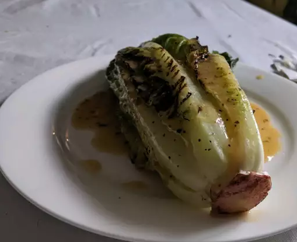

Romaine hearts are slightly charred on the grill, and served with a fabulous shallot-balsamic dressing. Accompanied with oven dried tomatoes. Whoever eats this will go nuts for it!!!
These are the ingredients needed for this delicious grilled romaine salad:
Preheat oven to 225 degrees F (110 degrees C). Mix olive oil, white sugar, rosemary, thyme, salt, and pepper in a large resealable plastic bag. Place tomatoes in the bag, seal, and shake to coat. Arrange coated tomato halves cut side up on a baking sheet. Bake tomatoes 2 1/2 hours in the preheated oven. Remove from heat, and let cool.
In a blender or food processor, finely chop the shallots. Add vinegar and brown sugar, and process until smooth. Slowly add 1 3/4 cups oil, processing frequently, so as to thicken the mixture.
Preheat grill for high heat. Brush romaine hearts with 1 tablespoon olive oil, and season with salt and pepper.
Place romaine hearts on the preheated grill. Cook 5 to 10 minutes, turning frequently, until slightly charred but not heated all the way through. Serve warm on salad plates surrounded by tomato pieces and drizzled with the shallot dressing.
The nutrition data for this recipe includes the full amount of the marinade ingredients. The actual amount of the marinade consumed will vary.
Go back to home